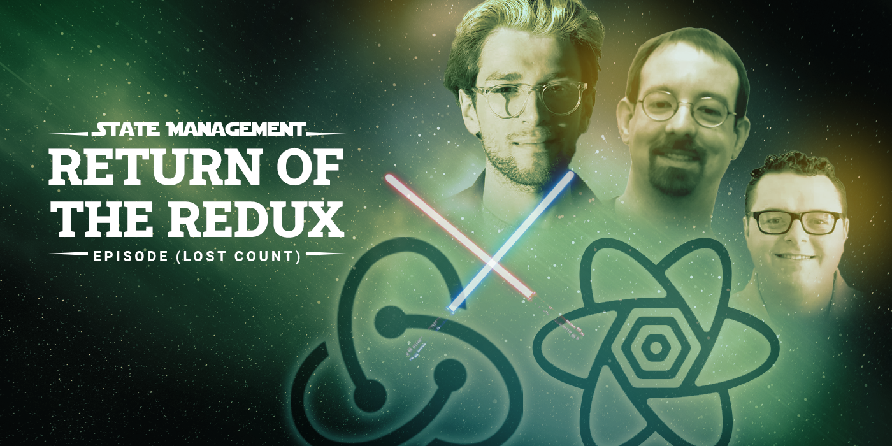

FOLLOWING
RECOMMENDED FOR YOU
Kolby Siks in Udacity Eng & Data
React state management in 2022--Return of the
Redux
At the beginning of the year if you told me I'd be publishing a
recommendation to use redux I would have laughed in your face. Yet her...
Dec 3
4 min read
React
Popular on Medium


Discover Medium writers you already follow on Twitter
Connect to Twitter
Maybe Later
Recommended topics
Technology
Money
Business
Productivity
Psychology
Mindfullness
Art
Who to follow

Lessig
law professor, activist.